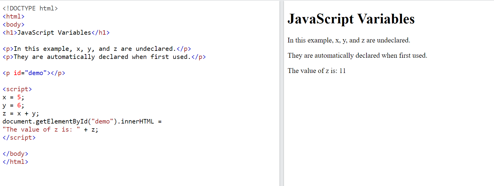

| No | Name | Details | Other Details | ||||||||
|---|---|---|---|---|---|---|---|---|---|---|---|
| 1 | Tip | It is considered good programming practice to always declare variables before use. | - | ||||||||
| 2 | Undeclared Variables |  | |||||||||
| 3 | Declaring a JavaScript Variable |
|
|
||||||||
| 4 | One Statement, Many Variables |
You can declare many variables in one statement.
Start the statement with let and separate the variables by comma.
Eg: let person = "John Doe", carName = "Volvo", price = 200; A declaration can span multiple lines. Eg: let person = "John Doe", carName = "Volvo", price = 200; |
|||||||||
| 5 | Redeclare the Variable |
|
var carName = "Volvo"; var carName; |
||||||||
| 6 | Putting Number in quotes | If you put a number in quotes, the rest of the numbers will be treated as strings, and concatenated. | let x = 2 + 3 + "5"; //55 | ||||||||
| 7 | JavaScript Dollar Sign $ |
|
let $$$ = 2; let $myMoney = 5; document.getElementById("demo").innerHTML = $$$ + $myMoney; O/p :- 7 |
||||||||
| 8 | JS Underscore | JavaScript treats underscore as a letter, identifiers containing _ are valid variable names |
let _lastName = "Johnny"; let _x = 2; |